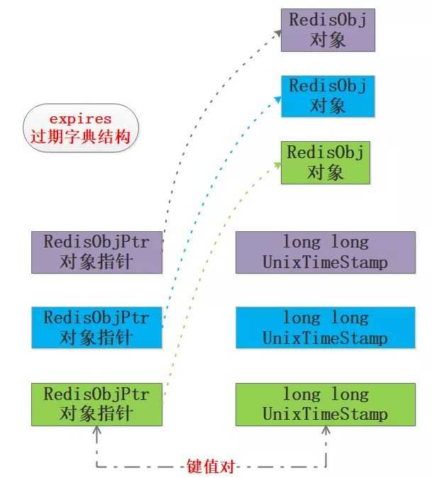

原文连接:https://www.cnblogs.com/backnullptr/p/12053335.html
前言
前面用两篇文章大致介绍了Redis热点面试中的底层实现相关的问题，感兴趣的可以回顾一下：
【决战西二旗】|Redis面试热点之底层实现篇
【决战西二旗】|Redis面试热点之底层实现篇(续)
接下来我们继续来一起研究下Redis工程架构相关的问题，这部分内容出现的概率相对大一些，因为并不是所有人都会去研究源码，如果面试一味问源码那么可能注定是一场尬聊。
面试时在不要求候选人对Redis非常熟练的前提下，工程问题将是不二之选，工程问题相对较多，因此本号将分几篇学习完，今天先来一起学习第一篇。
通过本文你将了解到以下内容：
1.Redis的内存回收详解
2.Redis的持久化机制
Q1:了解Redis的内存回收吗？讲讲你的理解
1.1 为什么要回收内存？
Redis作为内存型数据库，如果单纯的只进不出早晚就撑爆了，事实上很多把Redis当做主存储DB用的家伙们早晚会尝到这个苦果，当然除非你家厂子确实不差钱，数T级别的内存都毛毛雨，或者数据增长一定程度之后不再增长的场景，就另当别论了。
对于我们这种把节约成本当做KPI的普通厂子，还是把Redis当缓存用比较符合家里的经济条件，所以这么看面试官的问题还算是比较贴合实际，比起那些手撕RBTree好一些，如果问题刚好在你知识射程范围内，先给面试官点个赞再说！
为了让Redis服务安全稳定的运行，让使用内存保持在一定的阈值内是非常有必要的，因此我们就需要删除该删除的，清理该清理的，把内存留给需要的键值对，试想一条大河需要设置几个警戒水位来确保不决堤不枯竭，Redis也是一样的，只不过Redis只关心决堤即可，来一张图：
图中设定机器内存为128GB，占用64GB算是比较安全的水平，如果内存接近80%也就是100GB左右，那么认为Redis目前承载能力已经比较大了，具体的比例可以根据公司和个人的业务经验来确定。
笔者只是想表达出于安全和稳定的考虑，不要觉得128GB的内存就意味着存储128GB的数据，都是要打折的。
1.2 内存从哪里回收？
Redis占用的内存是分为两部分：存储键值对消耗和本身运行消耗。显然后者我们无法回收，因此只能从键值对下手了，键值对可以分为几种：带过期的、不带过期的、热点数据、冷数据。对于带过期的键值是需要删除的，如果删除了所有的过期键值对之后内存仍然不足怎么办？那只能把部分数据给踢掉了。
人生无处不取舍，这个让笔者脑海浮现了《泰坦尼克》，邮轮撞到了冰山顷刻间海水涌入，面临数量不足的救生艇，人们做出了抉择：让女士和孩童先走，绅士们选择留下，海上逃生场景如图：
1.3 如何实施过期键值对的删除？
要实施对键值对的删除我们需要明白如下几点：
- 带过期超时的键值对存储在哪里？
- 如何判断带超时的键值对是否可以被删除了？
- 删除机制有哪些以及如何选择？
1.3.1 键值对的存储
老规矩来到github看下源码，src/server.h中给的redisDb结构体给出了答案：
typedef struct redisDb {
dict *dict; /* The keyspace for this DB */
dict *expires; /* Timeout of keys with a timeout set */
dict *blocking_keys; /* Keys with clients waiting for data (BLPOP)*/
dict *ready_keys; /* Blocked keys that received a PUSH */
dict *watched_keys; /* WATCHED keys for MULTI/EXEC CAS */
int id; /* Database ID */
long long avg_ttl; /* Average TTL, just for stats */
unsigned long expires_cursor; /* Cursor of the active expire cycle. */
list *defrag_later; /* List of key names to attempt to defrag one by one, gradually. */
} redisDb;Redis本质上就是一个大的key-value，key就是字符串，value有是几种对象：字符串、列表、有序列表、集合、哈希等，这些key-value都是存储在redisDb的dict中的，来看下黄健宏画的一张非常赞的图：

看到这里，对于删除机制又清晰了一步，我们只要把redisDb中dict中的目标key-value删掉就行，不过貌似没有这么简单，Redis对于过期键值对肯定有自己的组织规则，让我们继续研究吧！
redisDb的expires成员的类型也是dict，和键值对是一样的，本质上expires是dict的子集，expires保存的是所有带过期的键值对，称之为过期字典吧，它才是我们研究的重点。
对于键，我们可以设置绝对和相对过期时间、以及查看剩余时间：
- 使用EXPIRE和PEXPIRE来实现键值对的秒级和毫秒级生存时间设定，这是相对时长的过期设置
- 使用EXPIREAT和EXPIREAT来实现键值对在某个秒级和毫秒级时间戳时进行过期删除，属于绝对过期设置
- 通过TTL和PTTL来查看带有生存时间的键值对的剩余过期时间
上述三组命令在设计缓存时用处比较大，有心的读者可以留意。
过期字典expires和键值对空间dict存储的内容并不完全一样，过期字典expires的key是指向Redis对应对象的指针，其value是long long型的unix时间戳，前面的EXPIRE和PEXPIRE相对时长最终也会转换为时间戳，来看下过期字典expires的结构，笔者画了个图：

1.3.2 键值对的过期删除判断
判断键是否过期可删除，需要先查过期字典是否存在该值，如果存在则进一步判断过期时间戳和当前时间戳的相对大小，做出删除判断，简单的流程如图：
1.3.3 键值对的删除策略
经过前面的几个环节，我们知道了Redis的两种存储位置：键空间和过期字典，以及过期字典expires的结构、判断是否过期的方法，那么该如何实施删除呢？
先抛开Redis来想一下可能的几种删除策略：
- 定时删除：在设置键的过期时间的同时，创建定时器，让定时器在键过期时间到来时，即刻执行键值对的删除；
- 定期删除：每隔特定的时间对数据库进行一次扫描，检测并删除其中的过期键值对；
- 惰性删除：键值对过期暂时不进行删除，至于删除的时机与键值对的使用有关，当获取键时先查看其是否过期，过期就删除，否则就保留；
在上述的三种策略中定时删除和定期删除属于不同时间粒度的主动删除，惰性删除属于被动删除。
三种策略都有各自的优缺点：
定时删除对内存使用率有优势，但是对CPU不友好，惰性删除对内存不友好，如果某些键值对一直不被使用，那么会造成一定量的内存浪费，定期删除是定时删除和惰性删除的折中。
Reids采用的是惰性删除和定时删除的结合，一般来说可以借助最小堆来实现定时器，不过Redis的设计考虑到时间事件的有限种类和数量，使用了无序链表存储时间事件，这样如果在此基础上实现定时删除，就意味着O(N)遍历获取最近需要删除的数据。
但是我觉得antirez如果非要使用定时删除，那么他肯定不会使用原来的无序链表机制，所以个人认为已存在的无序链表不能作为Redis不使用定时删除的根本理由，冒昧猜测唯一可能的是antirez觉得没有必要使用定时删除。
1.3.4 定期删除的实现细节
定期删除听着很简单，但是如何控制执行的频率和时长呢？
试想一下如果执行频率太少就退化为惰性删除了，如果执行时间太长又和定时删除类似了，想想还确实是个难题！并且执行定期删除的时机也需要考虑，所以我们继续来看看Redis是如何实现定期删除的吧！笔者在src/expire.c文件中找到了activeExpireCycle函数，定期删除就是由此函数实现的，在代码中antirez做了比较详尽的注释，不过都是英文的，试着读了一下模模糊糊弄个大概，所以学习英文并阅读外文资料是很重要的学习途径。
先贴一下代码，核心部分算上注释大约210行，具体看下：
#define ACTIVE_EXPIRE_CYCLE_KEYS_PER_LOOP 20 /* Keys for each DB loop. */
#define ACTIVE_EXPIRE_CYCLE_FAST_DURATION 1000 /* Microseconds. */
#define ACTIVE_EXPIRE_CYCLE_SLOW_TIME_PERC 25 /* Max % of CPU to use. */
#define ACTIVE_EXPIRE_CYCLE_ACCEPTABLE_STALE 10 /* % of stale keys after which
we do extra efforts. */
void activeExpireCycle(int type) {
/* Adjust the running parameters according to the configured expire
* effort. The default effort is 1, and the maximum configurable effort
* is 10. */
unsigned long
effort = server.active_expire_effort-1, /* Rescale from 0 to 9. */
config_keys_per_loop = ACTIVE_EXPIRE_CYCLE_KEYS_PER_LOOP +
ACTIVE_EXPIRE_CYCLE_KEYS_PER_LOOP/4*effort,
config_cycle_fast_duration = ACTIVE_EXPIRE_CYCLE_FAST_DURATION +
ACTIVE_EXPIRE_CYCLE_FAST_DURATION/4*effort,
config_cycle_slow_time_perc = ACTIVE_EXPIRE_CYCLE_SLOW_TIME_PERC +
2*effort,
config_cycle_acceptable_stale = ACTIVE_EXPIRE_CYCLE_ACCEPTABLE_STALE-
effort;
/* This function has some global state in order to continue the work
* incrementally across calls. */
static unsigned int current_db = 0; /* Last DB tested. */
static int timelimit_exit = 0; /* Time limit hit in previous call? */
static long long last_fast_cycle = 0; /* When last fast cycle ran. */
int j, iteration = 0;
int dbs_per_call = CRON_DBS_PER_CALL;
long long start = ustime(), timelimit, elapsed;
/* When clients are paused the dataset should be static not just from the
* POV of clients not being able to write, but also from the POV of
* expires and evictions of keys not being performed. */
if (clientsArePaused()) return;
if (type == ACTIVE_EXPIRE_CYCLE_FAST) {
/* Don't start a fast cycle if the previous cycle did not exit
* for time limit, unless the percentage of estimated stale keys is
* too high. Also never repeat a fast cycle for the same period
* as the fast cycle total duration itself. */
if (!timelimit_exit &&
server.stat_expired_stale_perc < config_cycle_acceptable_stale)
return;
if (start < last_fast_cycle + (long long)config_cycle_fast_duration*2)
return;
last_fast_cycle = start;
}
/* We usually should test CRON_DBS_PER_CALL per iteration, with
* two exceptions:
*
* 1) Don't test more DBs than we have.
* 2) If last time we hit the time limit, we want to scan all DBs
* in this iteration, as there is work to do in some DB and we don't want
* expired keys to use memory for too much time. */
if (dbs_per_call > server.dbnum || timelimit_exit)
dbs_per_call = server.dbnum;
/* We can use at max 'config_cycle_slow_time_perc' percentage of CPU
* time per iteration. Since this function gets called with a frequency of
* server.hz times per second, the following is the max amount of
* microseconds we can spend in this function. */
timelimit = config_cycle_slow_time_perc*1000000/server.hz/100;
timelimit_exit = 0;
if (timelimit <= 0) timelimit = 1;
if (type == ACTIVE_EXPIRE_CYCLE_FAST)
timelimit = config_cycle_fast_duration; /* in microseconds. */
/* Accumulate some global stats as we expire keys, to have some idea
* about the number of keys that are already logically expired, but still
* existing inside the database. */
long total_sampled = 0;
long total_expired = 0;
for (j = 0; j < dbs_per_call && timelimit_exit == 0; j++) {
/* Expired and checked in a single loop. */
unsigned long expired, sampled;
redisDb *db = server.db+(current_db % server.dbnum);
/* Increment the DB now so we are sure if we run out of time
* in the current DB we'll restart from the next. This allows to
* distribute the time evenly across DBs. */
current_db++;
/* Continue to expire if at the end of the cycle more than 25%
* of the keys were expired. */
do {
unsigned long num, slots;
long long now, ttl_sum;
int ttl_samples;
iteration++;
/* If there is nothing to expire try next DB ASAP. */
if ((num = dictSize(db->expires)) == 0) {
db->avg_ttl = 0;
break;
}
slots = dictSlots(db->expires);
now = mstime();
/* When there are less than 1% filled slots, sampling the key
* space is expensive, so stop here waiting for better times...
* The dictionary will be resized asap. */
if (num && slots > DICT_HT_INITIAL_SIZE &&
(num*100/slots < 1)) break;
/* The main collection cycle. Sample random keys among keys
* with an expire set, checking for expired ones. */
expired = 0;
sampled = 0;
ttl_sum = 0;
ttl_samples = 0;
if (num > config_keys_per_loop)
num = config_keys_per_loop;
/* Here we access the low level representation of the hash table
* for speed concerns: this makes this code coupled with dict.c,
* but it hardly changed in ten years.
*
* Note that certain places of the hash table may be empty,
* so we want also a stop condition about the number of
* buckets that we scanned. However scanning for free buckets
* is very fast: we are in the cache line scanning a sequential
* array of NULL pointers, so we can scan a lot more buckets
* than keys in the same time. */
long max_buckets = num*20;
long checked_buckets = 0;
while (sampled < num && checked_buckets < max_buckets) {
for (int table = 0; table < 2; table++) {
if (table == 1 && !dictIsRehashing(db->expires)) break;
unsigned long idx = db->expires_cursor;
idx &= db->expires->ht[table].sizemask;
dictEntry *de = db->expires->ht[table].table[idx];
long long ttl;
/* Scan the current bucket of the current table. */
checked_buckets++;
while(de) {
/* Get the next entry now since this entry may get
* deleted. */
dictEntry *e = de;
de = de->next;
ttl = dictGetSignedIntegerVal(e)-now;
if (activeExpireCycleTryExpire(db,e,now)) expired++;
if (ttl > 0) {
/* We want the average TTL of keys yet
* not expired. */
ttl_sum += ttl;
ttl_samples++;
}
sampled++;
}
}
db->expires_cursor++;
}
total_expired += expired;
total_sampled += sampled;
/* Update the average TTL stats for this database. */
if (ttl_samples) {
long long avg_ttl = ttl_sum/ttl_samples;
/* Do a simple running average with a few samples.
* We just use the current estimate with a weight of 2%
* and the previous estimate with a weight of 98%. */
if (db->avg_ttl == 0) db->avg_ttl = avg_ttl;
db->avg_ttl = (db->avg_ttl/50)*49 + (avg_ttl/50);
}
/* We can't block forever here even if there are many keys to
* expire. So after a given amount of milliseconds return to the
* caller waiting for the other active expire cycle. */
if ((iteration & 0xf) == 0) { /* check once every 16 iterations. */
elapsed = ustime()-start;
if (elapsed > timelimit) {
timelimit_exit = 1;
server.stat_expired_time_cap_reached_count++;
break;
}
}
/* We don't repeat the cycle for the current database if there are
* an acceptable amount of stale keys (logically expired but yet
* not reclained). */
} while ((expired*100/sampled) > config_cycle_acceptable_stale);
}
elapsed = ustime()-start;
server.stat_expire_cycle_time_used += elapsed;
latencyAddSampleIfNeeded("expire-cycle",elapsed/1000);
/* Update our estimate of keys existing but yet to be expired.
* Running average with this sample accounting for 5%. */
double current_perc;
if (total_sampled) {
current_perc = (double)total_expired/total_sampled;
} else
current_perc = 0;
server.stat_expired_stale_perc = (current_perc*0.05)+
(server.stat_expired_stale_perc*0.95);
}说实话这个代码细节比较多，由于笔者对Redis源码了解不多，只能做个模糊版本的解读，所以难免有问题，还是建议有条件的读者自行前往源码区阅读，抛砖引玉看下笔者的模糊版本：
- 该算法是个自适应的过程，当过期的key比较少时那么就花费很少的cpu时间来处理，如果过期的key很多就采用激进的方式来处理，避免大量的内存消耗，可以理解为判断过期键多就多跑几次，少则少跑几次；
- 由于Redis中有很多数据库db，该算法会逐个扫描，本次结束时继续向后面的db扫描，是个闭环的过程；
- 定期删除有快速循环和慢速循环两种模式，主要采用慢速循环模式，其循环频率主要取决于server.hz，通常设置为10，也就是每秒执行10次慢循环定期删除，执行过程中如果耗时超过25%的CPU时间就停止；
- 慢速循环的执行时间相对较长，会出现超时问题，快速循环模式的执行时间不超过1ms，也就是执行时间更短，但是执行的次数更多，在执行过程中发现某个db中抽样的key中过期key占比低于25%则跳过；
主体意思：定期删除是个自适应的闭环并且概率化的抽样扫描过程，过程中都有执行时间和cpu时间的限制，如果触发阈值就停止，可以说是尽量在不影响对客户端的响应下润物细无声地进行的。
1.3.5 DEL删除键值对
在Redis4.0之前执行del操作时如果key-value很大，那么可能导致阻塞，在新版本中引入了BIO线程以及一些新的命令，实现了del的延时懒删除，最后会有BIO线程来实现内存的清理回收。
之前写过一篇4.0版本的LazyFree相关的文章，可以看下浅析Redis 4.0新特性之LazyFree
1.4 内存淘汰机制
为了保证Redis的安全稳定运行，设置了一个max-memory的阈值，那么当内存用量到达阈值，新写入的键值对无法写入，此时就需要内存淘汰机制，在Redis的配置中有几种淘汰策略可以选择，详细如下：
- noeviction: 当内存不足以容纳新写入数据时，新写入操作会报错；
- allkeys-lru：当内存不足以容纳新写入数据时，在键空间中移除最近最少使用的 key；
- allkeys-random：当内存不足以容纳新写入数据时，在键空间中随机移除某个 key；
- volatile-lru：当内存不足以容纳新写入数据时，在设置了过期时间的键空间中，移除最近最少使用的 key；
- volatile-random：当内存不足以容纳新写入数据时，在设置了过期时间的键空间中，随机移除某个 key；
- volatile-ttl：当内存不足以容纳新写入数据时，在设置了过期时间的键空间中，有更早过期时间的 key 优先移除；
后三种策略都是针对过期字典的处理，但是在过期字典为空时会noeviction一样返回写入失败，毫无策略地随机删除也不太可取，所以一般选择第二种allkeys-lru基于LRU策略进行淘汰。
个人认为antirez一向都是工程化思维，善于使用概率化设计来做近似实现，LRU算法也不例外，Redis中实现了近似LRU算法，并且经过几个版本的迭代效果已经比较接近理论LRU算法的效果了，这个也是个不错的内容，由于篇幅限制，本文计划后续单独讲LRU算法时再进行详细讨论。
1.5 过期键删除和内存淘汰的关系
过期健删除策略强调的是对过期健的操作，如果有健过期而内存足够，Redis不会使用内存淘汰机制来腾退空间，这时会优先使用过期健删除策略删除过期健。
内存淘汰机制强调的是对内存数据的淘汰操作，当内存不足时，即使有的健没有到达过期时间或者根本没有设置过期也要根据一定的策略来删除一部分，腾退空间保证新数据的写入。
Q2:讲讲你对Redis持久化机制的理解。
个人认为Redis持久化既是数据库本身的亮点，也是面试的热点，主要考察的方向包括：RDB机制原理、AOF机制原理、各自的优缺点、工程上的对于RDB和AOF的取舍、新版本Redis混合持久化策略等，如能把握要点，持久化问题就过关了。
之前写过一篇持久化的文章：理解Redis持久化,基本上也涵盖了上面的几个点，可以看一下。